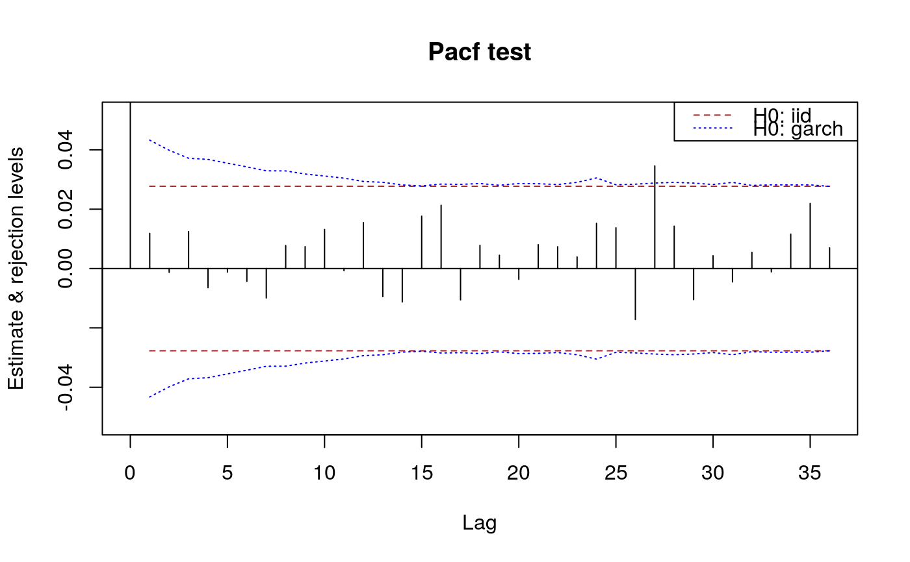
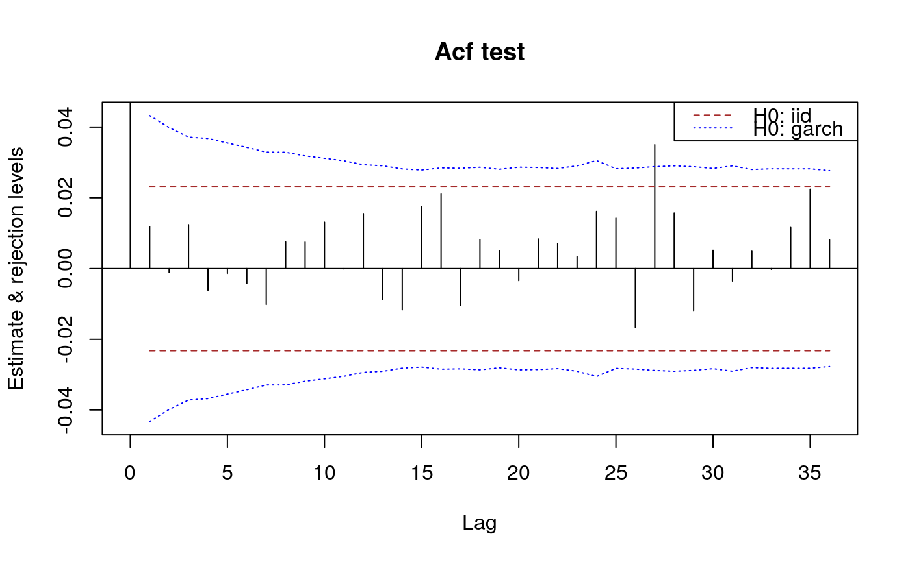

acfGarchTest.RdCarry out a test for GARCH white noise
acfGarchTest(acr, x, nlags, interval = 0.95) acfWnTest(acr, x, nlags, interval = 0.95, ...)
| acr | autocorrelations. |
|---|---|
| x | time series. |
| nlags | how many lags to use. |
| interval | If not NULL, compute also confidence intervals with the specified coverage probability. |
| ... | additional arguments for the computation of the variance matrix
under the null hypothesis, passed on to |
Unlike the autocorrelation IID test, the time series is needed here to estimate the covariance matrix of the autocorrelations under the null hypothesis.
acfGarchTest performs a test for uncorrelatedness of a time
series. The null hypothesis is that the time series is GARCH,
see Francq and Zakoian (2010)
.
acfWnTest performs a test for uncorrelatedness of a time
series under a weaker null hypothesis.
The null hypothesis is that the time series is GARCH-type or
from a stochasitc volatily model,
see Kokoszka and Politis (2011)
.
See the references for details and precise specification of the hypotheses.
The format of the return value is the same as for acfIidTest.
a list with components "test" and "ci"
Francq C, Zakoian J (2010).
GARCH models: structure, statistical inference and financial applications.
John Wiley & Sons.
ISBN 978-0-470-68391-0.
Kokoszka P, Politis D (2011).
“Nonlinearity of ARCH and stochastic volatility models and Bartlett's formula.”
Probability and Mathematical Statistics, 31(1), 47--59.
## see also the examples for \code{\link{whiteNoiseTest}} n <- 5000 x <- sarima:::rgarch1p1(n, alpha = 0.3, beta = 0.55, omega = 1, n.skip = 100) x.acf <- autocorrelations(x) x.pacf <- partialAutocorrelations(x) acfGarchTest(x.acf, x = x, nlags = c(5,10,20))#> $test #> h Q pval #> [1,] 5 0.8710958 0.9722788 #> [2,] 10 2.6315033 0.9888177 #> [3,] 20 9.9309196 0.9694073 #> #> $ci #> int #> [1,] -0.04325793 0.04325793 #> [2,] -0.03985199 0.03985199 #> [3,] -0.03716925 0.03716925 #> [4,] -0.03677647 0.03677647 #> [5,] -0.03550609 0.03550609 #> [6,] -0.03426083 0.03426083 #> [7,] -0.03292925 0.03292925 #> [8,] -0.03289500 0.03289500 #> [9,] -0.03185392 0.03185392 #> [10,] -0.03116790 0.03116790 #> [11,] -0.03046597 0.03046597 #> [12,] -0.02934952 0.02934952 #> [13,] -0.02905753 0.02905753 #> [14,] -0.02816732 0.02816732 #> [15,] -0.02785934 0.02785934 #> [16,] -0.02845808 0.02845808 #> [17,] -0.02836559 0.02836559 #> [18,] -0.02864674 0.02864674 #> [19,] -0.02807051 0.02807051 #> [20,] -0.02865829 0.02865829 #>#> $test #> h Q pval #> [1,] 5 0.8848856 0.9713062 #> [2,] 10 2.6408230 0.9886609 #> [3,] 20 9.9930817 0.9682972 #> #> $ci #> int #> [1,] -0.04325793 0.04325793 #> [2,] -0.03985199 0.03985199 #> [3,] -0.03716925 0.03716925 #> [4,] -0.03677647 0.03677647 #> [5,] -0.03550609 0.03550609 #> [6,] -0.03426083 0.03426083 #> [7,] -0.03292925 0.03292925 #> [8,] -0.03289500 0.03289500 #> [9,] -0.03185392 0.03185392 #> [10,] -0.03116790 0.03116790 #> [11,] -0.03046597 0.03046597 #> [12,] -0.02934952 0.02934952 #> [13,] -0.02905753 0.02905753 #> [14,] -0.02816732 0.02816732 #> [15,] -0.02785934 0.02785934 #> [16,] -0.02845808 0.02845808 #> [17,] -0.02836559 0.02836559 #> [18,] -0.02864674 0.02864674 #> [19,] -0.02807051 0.02807051 #> [20,] -0.02865829 0.02865829 #>#> $test #> h Q pval #> [1,] 5 0.8848856 0.9713062 #> [2,] 10 2.6408230 0.9886609 #> [3,] 20 9.9930817 0.9682972 #>#> $test #> h Q pval #> [1,] 5 0.8334477 0.9748511 #> [2,] 10 2.3506424 0.9928781 #> [3,] 20 9.0860937 0.9818885 #> #> $ci #> int #> [1,] -0.04325793 0.04325793 #> [2,] -0.03985199 0.03985199 #> [3,] -0.03716925 0.03716925 #> [4,] -0.03677647 0.03677647 #> [5,] -0.03550609 0.03550609 #> [6,] -0.03426083 0.03426083 #> [7,] -0.03292925 0.03292925 #> [8,] -0.03289500 0.03289500 #> [9,] -0.03185392 0.03185392 #> [10,] -0.03116790 0.03116790 #> [11,] -0.03046597 0.03046597 #> [12,] -0.02934952 0.02934952 #> [13,] -0.02905753 0.02905753 #> [14,] -0.02816732 0.02816732 #> [15,] -0.02785934 0.02785934 #> [16,] -0.02845808 0.02845808 #> [17,] -0.02836559 0.02836559 #> [18,] -0.02864674 0.02864674 #> [19,] -0.02807051 0.02807051 #> [20,] -0.02865829 0.02865829 #>#> [1] 2.435596 2.067159 1.798215 1.760411 1.640890 1.527811 1.411359 1.408425 #> [9] 1.320686 1.264413 1.208103 1.121181 1.098984 1.032678 1.010219 1.054108 #> [17] 1.047267 1.068130 1.025592 1.068992#> $test #> h Q pval #> [1,] 5 0.8334477 0.9748511 #> [2,] 10 2.3506424 0.9928781 #> [3,] 20 9.0860937 0.9818885 #> #> $ci #> int #> [1,] -0.04325793 0.04325793 #> [2,] -0.03985199 0.03985199 #> [3,] -0.03716925 0.03716925 #> [4,] -0.03677647 0.03677647 #> [5,] -0.03550609 0.03550609 #> [6,] -0.03426083 0.03426083 #> [7,] -0.03292925 0.03292925 #> [8,] -0.03289500 0.03289500 #> [9,] -0.03185392 0.03185392 #> [10,] -0.03116790 0.03116790 #> [11,] -0.03046597 0.03046597 #> [12,] -0.02934952 0.02934952 #> [13,] -0.02905753 0.02905753 #> [14,] -0.02816732 0.02816732 #> [15,] -0.02785934 0.02785934 #> [16,] -0.02845808 0.02845808 #> [17,] -0.02836559 0.02836559 #> [18,] -0.02864674 0.02864674 #> [19,] -0.02807051 0.02807051 #> [20,] -0.02865829 0.02865829 #>